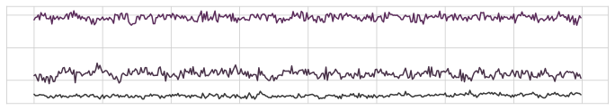

On-device Learning of Activity Recognition Networks
Personalized machine learning on the smartphone
Privacy Preserving
Leverage the power of on-device machine learning for training personalized models without the need of sharing your data.
Transfer Learning
Harness a pretrained network learnt using a large-scale dataset for efficient fine-tuning on a specific target task of interest with few-labeled data.
Context Detection
Develop robust activity sensing models for a wide-variety of personal informatics applications running directly on your smartdevice.
Learning on-device activity recognizer
In this article, I explain how to utilize transfer learning for efficiently training a personalized activity recognition model on the Android device. The post assumes familiarity with pre-processing sensory data, convolutional neural network, and a basic understanding of Android programming. To understand how the former can be done, please consult this post.
Overview
Deep learning has become a state-of-the-art method in several areas to match human-level performance, mainly in object detection, language modeling, mastering complex strategy games, generation of synthetic imagery, and developing sensing systems. However, deep neural networks with a high capacity require a massive amount of well-curated data for achieving generalization and mitigating the problem of overfitting. This issue escalates even further when we try to adapt or personalize a model to fit the user's needs. It could be because that adaptation currently requires data to be accumulated in a centralized repository, which then leads to privacy concerns and has substantial annotation cost. A potential solution for tackling this issue is transfer learning. In this case, we learn a model on a large dataset in a central context (or say datacenter) then use it as a fixed feature extractor for fine-tuning a small network on top of it, and this is achieved directly on the device without ever sending the data to the server. In this project, I will show how to develop a model leveraging transfer learning and an Android app to recognize daily activities from sensory data of a smartphone. For this purpose, we will use recent release of Tensorflow Lite Transfer Learning Pipeline. So let’s get started!
We will build this project in three phases, a) training a temporal convolutional network on a large activity recognition dataset, b) converting the model with TFLite API in a suitable format along with defining a network that can be used on device and finally, c) developing an Android app to put everything together. The entire codebase can be accessed here for research purpose only.
Dataset and Network Architecture
To achieve our objective of activity recognition, we need to train the network on a large labeled dataset of IMUs values that has corresponding activity annotations. In our case, we will use accelerometer and gyroscope sensor data from this paper, which is collected from a diverse set of devices and has labels for six activities of daily routine. The sample pre-processed instances are illustrated in the figure below. If you use this dataset in your research cite the corresponding paper and do check the license.
 Accelerometer Gyroscope
Let's define a convolutional neural network architecture that processes IMU (i.e, triaxial accelerometer and gyroscope) streams and output probabilities over six activities.
from tensorflow.keras.models import Model
from tensorflow.keras.optimizers import Adam
from tensorflow.keras.regularizers import l2
from tensorflow.keras.layers import Input, Conv2D, Flatten, Dense, MaxPool2D, Reshape
def get_model(input_shape = (2400,), num_classes = 6, learning_rate = 1e-4, l2_rate = 1e-4):
input = Input(shape=input_shape)
reshape_input = Reshape((1, 400, 6))(input)
x = Conv2D(32, kernel_size = (1, 24),
strides = (1, 1),
activation = "relu",
padding = "valid",
kernel_regularizer = l2(l2_rate))(reshape_input)
x = MaxPool2D((1, 4), (1, 2))(x)
x = Conv2D(64, kernel_size = (1, 16),
strides = (1, 1),
activation = "relu",
padding = "valid",
kernel_regularizer = l2(l2_rate))(x)
x = MaxPool2D((1, 4), (1, 2))(x)
x = Conv2D(96, kernel_size = (1, 8),
strides = (1, 1),
activation = "relu",
padding = "valid",
kernel_regularizer = l2(l2_rate))(x)
x = MaxPool2D((1, 4), (1, 2))(x)
x = Conv2D(128, kernel_size = (1, 4),
strides = (1, 1),
activation = "relu",
padding = "valid",
kernel_regularizer = l2(l2_rate),
name="encoder")(x)
x = Flatten()(x)
output = Dense(num_classes, activation = "softmax")(x)
model = Model(input, output)
model.compile(optimizer = Adam(learning_rate),
loss = "categorical_crossentropy",
metrics = ["categorical_accuracy"])
return model
After training the network for a fixed number of epochs in a standard way, we will save the encoder part of the network named base (i.e., without the last layer) in a Tensorflow SavedModel format.
The next step is to define a fine-tuning network named head with additional layers that will be trained on a device while keeping the base model fixed.
To keep things simple, we add a fully connected layer with 128 units and an output layer with 2 units (for differentiating between two activities).
Here, you can also choose between following optimizers Adam or SGD with optimizers.SGD and optimizers.Adam, respectively.
Afterward, we will convert and save this network using the TFLite Transfer Converter that will generate the following five files: bottleneck.tflite,
inference.tflite, initialize.tflite, optimizer.tflite, and train_head.tflite in a specified directory.
import numpy as np
import tensorflow as tf
from tensorflow.keras.models import Model, Sequential, load_model, save_model
from tensorflow.keras.regularizers import l2
from tensorflow.keras.layers import Flatten, Dense
from model import get_model
from tfltransfer import bases
from tfltransfer import heads
from tfltransfer import optimizers
from tfltransfer.tflite_transfer_converter import TFLiteTransferConverter
if __name__ == "__main__":
x = np.load("x.npy")
y = np.load("y.npy")
epochs = 10
batch_size = 32
tflite_model = "par_model"
tflite_ondevice_model = "par_ondevice"
encoder_layer = "encoder"
window_size = x.shape[1]
num_channels = x.shape[2]
x_reshaped = x.reshape(-1, window_size * num_channels)
model = get_model()
model.fit(x_reshaped, y, epochs = epochs,
batch_size = batch_size, verbose = 2)
model = Model(model.input, model.get_layer(encoder_layer).output)
save_model(model, tflite_model,
include_optimizer = False,
save_format="tf")
# --------------- on-device model conversion ---------------- #
# Model configuration.
num_classes = 2
learning_rate = 0.001
batch_size = 5
l2_rate = 0.0001
hidden_units = 128
input_shape = model.get_layer(encoder_layer).output.shape
base = bases.SavedModelBase(tflite_model)
head = Sequential([
Flatten(input_shape=input_shape),
Dense(units=hidden_units,
activation="relu",
kernel_regularizer=l2(l2_rate)),
Dense(units=num_classes,
activation="softmax",
kernel_regularizer=l2(l2_rate)),
])
# Optimizer is ignored by the converter.
head.compile(loss="categorical_crossentropy", optimizer="adam")
converter = TFLiteTransferConverter(num_classes,
base,
heads.KerasModelHead(head),
optimizers.SGD(learning_rate),
train_batch_size=batch_size)
converter.convert_and_save(tflite_ondevice_model)Application
In this phase, we will focus on developing an Android app that can use the generated model in earlier steps for fine-tuning, inference, and data collection. The app does not require access to the internet and works completely offline, resulting in improved user privacy.
Let's create a new Android project or start from the one provided here. To start, copy the five model files under a folder named model within the assets directory of the project.
In AndroidManifest.xml file copy the below lines, this will give our app access to the accelerometer/gyroscope, vibration, and reading/writing model files. Likewise, the included transfer_api library has all the required functionality for performing on-device machine learning.
< uses-feature android:name="android.hardware.sensor.accelerometer" android:required="true" />
< uses-feature android:name="android.hardware.sensor.gyroscope" android:required="true" />
< uses-permission android:name="android.permission.VIBRATE" />
< uses-permission android:name="android.permission.WRITE_EXTERNAL_STORAGE" />
Importantly, in build.gradle file we need to add the following dependency to use
custom Keras model implementation 'org.tensorflow:tensorflow-lite-select-tf-ops:0.0.0-nightly'. See the complete build file here.
Now we are in right place to build the UI (or an Android activity). Please feel free to design it as you like. Here, I have designed it to showcase three aspects a) data collection, b) training and c) inference. Each block in the interface consists of details relevant to the mentioned features which can be controlled with appropriate item selection from the topmost spinner and start/stop buttons at the bottom.
 App User Interface
App User Interface
In the TansferLearningModelWrapper.java file, we will make changes to specify our model directory name within assets folder and the name of classes on line 50-51 as:
model = new TransferLearningModel(new AssetModelLoader(context, "model"), Arrays.asList("Class A", "Class B"));
Moreover, on top of the functionality provided by the TFLite team in TansferLearningModelWrapper, I have also added two additional methods in this class to save and reload the model.
public void saveModel(File file){
try {
FileOutputStream out = new FileOutputStream(file);
GatheringByteChannel gather = out.getChannel();
model.saveParameters(gather);
} catch (FileNotFoundException e) {
e.printStackTrace();
} catch (IOException e) {
e.printStackTrace();
}
}
public void loadModel(File file){
try {
FileInputStream inp = new FileInputStream(file);
ScatteringByteChannel scatter = inp.getChannel();
model.loadParameters(scatter);
} catch (FileNotFoundException e) {
e.printStackTrace();
} catch (IOException e) {
e.printStackTrace();
}
}
In the MainActivity.java file, we will add functionality to glue everything together from, data collection to training and inference directly on the smartphone.
The code below is mostly self-explanatory if you have a basic understanding of Android programming.
The crucial bits are collecting accelerometer/gyroscope data at the highest sampling rate possible and feed into our model when there are 400 values in the buffer.
If the data collection mode is selected, we will keep adding instances with their corresponding class ids to the model cache.
When we have the required number of instances per class available (which are 5 per category in our case), the training can be initiated. The loss values can be observed fluctuating in the panel as the network is trained.
The model can also be saved and reload by uncommenting the lines 190-195 and 168-176, respectively. During inference, we can observe the output probability of each class in the lower panel.
Likewise, the phone will vibrate if the Class B's probability is above a predefined threshold to make classification process more apparent. Now, compile and run the app on an Android device to see the finished product. I have tested the app on devices running Android version 9.
package org.tensorflow.lite.examples.transfer;
import androidx.appcompat.app.AppCompatActivity;
import android.content.Context;
import android.hardware.Sensor;
import android.hardware.SensorEvent;
import android.hardware.SensorEventListener;
import android.hardware.SensorManager;
import android.os.Bundle;
import android.os.VibrationEffect;
import android.view.View;
import android.widget.AdapterView;
import android.widget.ArrayAdapter;
import android.widget.Button;
import android.widget.Spinner;
import android.widget.TextView;
import org.tensorflow.lite.examples.transfer.api.TransferLearningModel.Prediction;
import java.math.BigDecimal;
import java.util.ArrayList;
import java.util.List;
import android.os.Vibrator;
import android.widget.Toast;
enum Mode {
Data_Collection,
Inference,
Training
}
public class MainActivity extends AppCompatActivity implements SensorEventListener {
final int NUM_SAMPLES = 400;
String MODEL_NAME = "ar_model";
double VB_THRESHOLD = 0.75;
int classAInstanceCount = 0;
int classBInstanceCount = 0;
boolean isRunning = false;
SensorManager mSensorManager;
Sensor mAccelerometer;
Sensor mGyroscope;
TransferLearningModelWrapper tlModel;
String classId;
static List x_accel;
static List y_accel;
static List z_accel;
static List x_gyro;
static List y_gyro;
static List z_gyro;
static List input_signal;
Mode mode;
Button startButton;
Button stopButton;
TextView classATextView;
TextView classBTextView;
TextView classAInstanceCountTextView;
TextView classBInstanceCountTextView;
TextView lossValueTextView;
Spinner optionSpinner;
Spinner classSpinner;
Vibrator vibrator;
@Override
public void onCreate(Bundle savedInstanceState) {
super.onCreate(savedInstanceState);
setContentView(R.layout.activity_main);
vibrator = (Vibrator) getSystemService(Context.VIBRATOR_SERVICE);
startButton = (Button) findViewById(R.id.buttonStart);
stopButton = (Button) findViewById(R.id.buttonStop);
stopButton.setEnabled(false);
classATextView = (TextView)findViewById(R.id.classAOutputValueTextView);
classBTextView = (TextView)findViewById(R.id.classBOutputValueTextView);
classAInstanceCountTextView = (TextView)findViewById(R.id.classACountValueTextView);
classBInstanceCountTextView = (TextView)findViewById(R.id.classBCountValueTextView);
lossValueTextView = (TextView)findViewById(R.id.lossValueTextView);
optionSpinner = (Spinner) findViewById(R.id.optionSpinner);
classSpinner = (Spinner) findViewById(R.id.classSpinner);
ArrayAdapter optionAdapter = ArrayAdapter
.createFromResource(this, R.array.options_array,
R.layout.spinner_item);
optionAdapter
.setDropDownViewResource(android.R.layout.simple_spinner_dropdown_item);
optionSpinner.setAdapter(optionAdapter);
ArrayAdapter classAdapter = ArrayAdapter
.createFromResource(this, R.array.class_array,
R.layout.spinner_item);
classAdapter
.setDropDownViewResource(android.R.layout.simple_spinner_dropdown_item);
classSpinner.setAdapter(classAdapter);
x_accel = new ArrayList();
y_accel = new ArrayList();
z_accel = new ArrayList();
x_gyro= new ArrayList();
y_gyro = new ArrayList();
z_gyro = new ArrayList();
input_signal = new ArrayList();
mSensorManager = (SensorManager) getSystemService(Context.SENSOR_SERVICE);
mAccelerometer = mSensorManager.getDefaultSensor(Sensor.TYPE_ACCELEROMETER);
mGyroscope = mSensorManager.getDefaultSensor(Sensor.TYPE_GYROSCOPE);
mSensorManager.registerListener(this, mAccelerometer, SensorManager.SENSOR_DELAY_FASTEST);
mSensorManager.registerListener(this, mGyroscope, SensorManager.SENSOR_DELAY_FASTEST);
tlModel = new TransferLearningModelWrapper(getApplicationContext());
optionSpinner.setOnItemSelectedListener(new AdapterView.OnItemSelectedListener() {
@Override
public void onItemSelected(AdapterView parent, View view,
int position, long id) {
String option = (String) parent.getItemAtPosition(position);
switch (option){
case "Data Collection":
mode = Mode.Data_Collection;
break;
case "Training":
mode = Mode.Training;
break;
case "Inference":
mode = Mode.Inference;
break;
default:
throw new IllegalArgumentException("Invalid app mode.");
}
}
@Override
public void onNothingSelected(AdapterView parent) {
// TODO Auto-generated method stub
}
});
classSpinner.setOnItemSelectedListener(new AdapterView.OnItemSelectedListener() {
@Override
public void onItemSelected(AdapterView parent, View view,
int position, long id) {
classId = (String) parent.getItemAtPosition(position);
}
@Override
public void onNothingSelected(AdapterView parent) {
// TODO Auto-generated method stub
}
});
startButton.setOnClickListener( new View.OnClickListener() {
@Override
public void onClick(View v) {
startButton.setEnabled(false);
stopButton.setEnabled(true);
optionSpinner.setEnabled(false);
isRunning = true;
// Uncomment following lines to load an existing model.
/* if(mode == Mode.Inference){
File modelPath = getApplicationContext().getFilesDir();
File modelFile = new File(modelPath, MODEL_NAME);
if(modelFile.exists()){
tlModel.loadModel(modelFile);
Toast.makeText(getApplicationContext(), "Model loaded.", Toast.LENGTH_SHORT).show();
}
}
*/
}
});
stopButton.setOnClickListener( new View.OnClickListener() {
@Override
public void onClick(View v) {
startButton.setEnabled(true);
stopButton.setEnabled(false);
optionSpinner.setEnabled(true);
isRunning = false;
if(mode == Mode.Training){
tlModel.disableTraining();
// Uncomment following lines to save the model.
/*
File modelPath = getApplicationContext().getFilesDir();
File modelFile = new File(modelPath, MODEL_NAME);
tlModel.saveModel(modelFile);
Toast.makeText(getApplicationContext(), "Model saved.", Toast.LENGTH_SHORT).show();
*/
}
}
});
}
protected void onPause() {
super.onPause();
mSensorManager.unregisterListener(this);
}
protected void onResume() {
super.onResume();
mSensorManager.registerListener(this, mAccelerometer, SensorManager.SENSOR_DELAY_FASTEST);
mSensorManager.registerListener(this, mGyroscope, SensorManager.SENSOR_DELAY_FASTEST);
}
protected void onDestroy() {
super.onDestroy();
tlModel.close();
tlModel = null;
mSensorManager = null;
}
@Override
public void onSensorChanged(SensorEvent event) {
switch (event.sensor.getType()) {
case Sensor.TYPE_ACCELEROMETER:
x_accel.add(event.values[0]); y_accel.add(event.values[1]); z_accel.add(event.values[2]);
break;
case Sensor.TYPE_GYROSCOPE:
x_gyro.add(event.values[0]); y_gyro.add(event.values[1]); z_gyro.add(event.values[2]);
break;
}
//Check if we have desired number of samples for sensors, if yes, the process input.
if(x_accel.size() == NUM_SAMPLES && y_accel.size() == NUM_SAMPLES &&
z_accel.size() == NUM_SAMPLES && x_gyro.size() == NUM_SAMPLES &&
y_gyro.size() == NUM_SAMPLES && z_gyro.size() == NUM_SAMPLES)
processInput();
}
@Override
public void onAccuracyChanged(Sensor sensor, int i) {
}
private void processInput()
{
int i = 0;
while (i < NUM_SAMPLES) {
input_signal.add(x_accel.get(i));
input_signal.add(y_accel.get(i));
input_signal.add(z_accel.get(i));
input_signal.add(x_gyro.get(i));
input_signal.add(y_gyro.get(i));
input_signal.add(z_gyro.get(i));
i++;
}
float[] input = toFloatArray(input_signal);
if (isRunning){
if(mode == Mode.Training){
int batchSize = tlModel.getTrainBatchSize();
if(classAInstanceCount >= batchSize && classBInstanceCount >= batchSize){
tlModel.enableTraining((epoch, loss) -> runOnUiThread(new Runnable() {
@Override
public void run() {
lossValueTextView.setText(Float.toString(loss));
}
}));
}
else{
String message = batchSize + " instances per class are required for training.";
Toast.makeText(getApplicationContext(), message, Toast.LENGTH_SHORT).show();
stopButton.callOnClick();
}
}
else if (mode == Mode.Data_Collection){
tlModel.addSample(input, classId);
if (classId.equals("Class A")) classAInstanceCount += 1;
else if(classId.equals("Class B")) classBInstanceCount += 1;
classAInstanceCountTextView.setText(Integer.toString(classAInstanceCount));
classBInstanceCountTextView.setText(Integer.toString(classBInstanceCount));
}
else if (mode == Mode.Inference) {
Prediction[] predictions = tlModel.predict(input);
// Vibrate the phone if Class B is detected.
if(predictions[1].getConfidence() > VB_THRESHOLD)
vibrator.vibrate(VibrationEffect.createOneShot(200,
VibrationEffect.DEFAULT_AMPLITUDE));
String classAOutput = Float.toString(round(predictions[0].getConfidence(), 4));
String classBOutput = Float.toString(round(predictions[1].getConfidence(), 4));
classATextView.setText(classAOutput);
classBTextView.setText(classBOutput);
}
}
// Clear all the values
x_accel.clear(); y_accel.clear(); z_accel.clear();
x_gyro.clear(); y_gyro.clear(); z_gyro.clear();
input_signal.clear();
}
private float[] toFloatArray(List list)
{
int i = 0;
float[] array = new float[list.size()];
for (Float f : list) {
array[i++] = (f != null ? f : Float.NaN);
}
return array;
}
private static float round(float d, int decimalPlace) {
BigDecimal bd = new BigDecimal(Float.toString(d));
bd = bd.setScale(decimalPlace, BigDecimal.ROUND_HALF_UP);
return bd.floatValue();
}
}
Future Work
The opportunities for on-device learning are endless, in my opinion. To explore further, I would encourage you to incorporate more activities, pair the smartphone with a wearable and fine-tune the model with smartwatch data. Similarly, several useful applications could be build using the presented framework to do exciting things based on detected user activities. Finally, I am also quite interested in audio recognition models running locally on-device. I am working on getting SoundNet model to work on the phone so it can be used as a fixed feature extractor for an end-task network. The SoundNet can directly consume raw (mono) audio, so no sophisticated pre-processing is required; however, the missing piece of the puzzle is to add the functionality of audio recording in the app and dealing with dynamic input size in tflite. If you want to take up this challenge, please get in touch at: aqibsaeed@protonmail.com.
References
- Implementing a CNN for Human Activity Recognition in Tensorflow
- Example on-device model personalization with TensorFlow Lite
- Smart Devices are Different: Assessing and Mitigating Mobile Sensing Heterogeneities for Activity Recognition
- SoundNet: Learning Sound Representations from Unlabeled Video
Citation
If you find this work useful, please cite it as:
@misc{saeed2020recognition,
author = {Saeed, Aaqib},
title = {On-device Learning of Activity Recognition Networks},
year = {2020},
journal = {aqibsaeed.github.io},
url = {\url{https://gitHub.com/aqibsaeed/on-device-activity-recognition}}
}
Last updated: 02/04/2020.